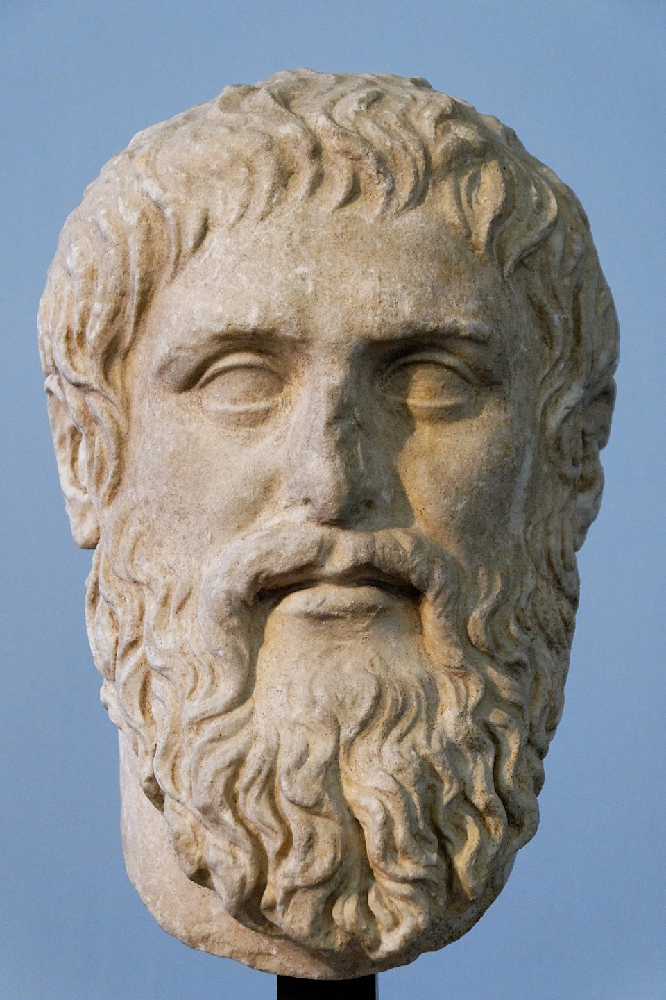
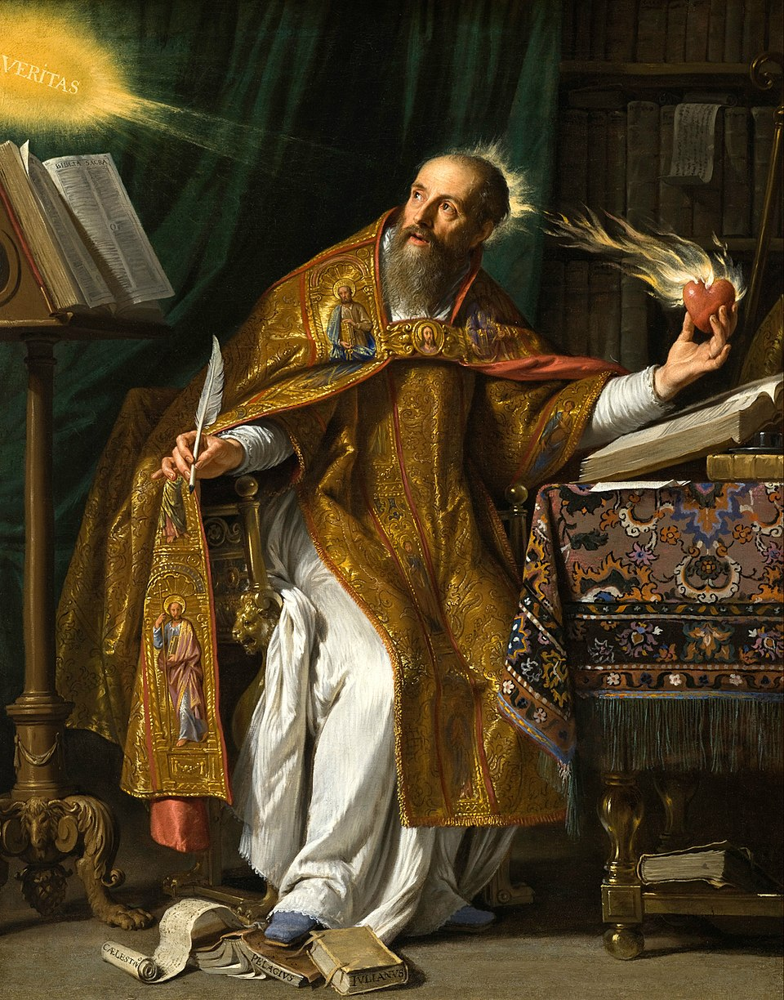
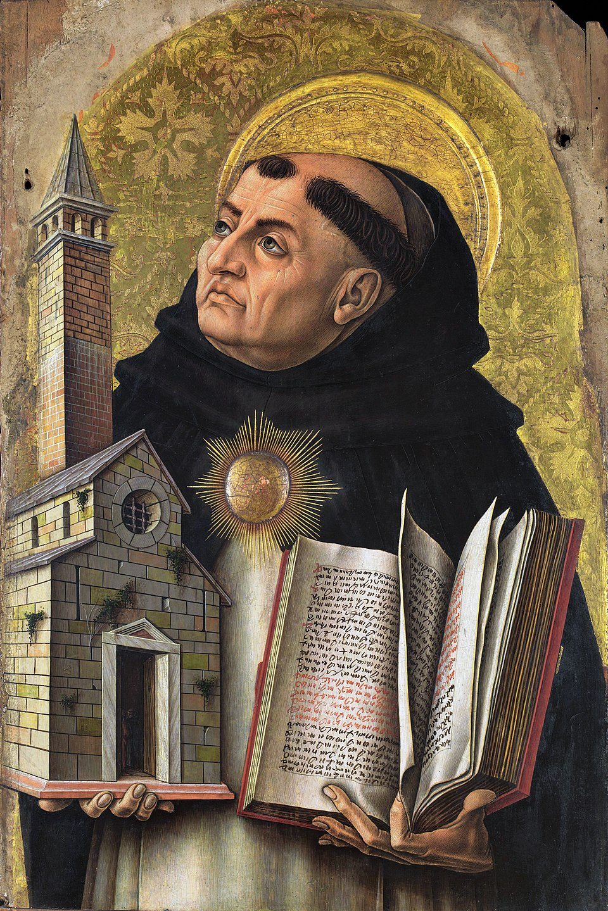

Platão (c. 428 a.C. – c. 348 a.C.)
Platão foi um filósofo grego, discípulo de Sócrates e mestre de Aristóteles. Fundador da Academia de Atenas, é considerado uma das figuras centrais da filosofia ocidental. Seus escritos são majoritariamente diálogos, nos quais explora temas como justiça, política, ética, epistemologia e metafísica.
Entre suas principais contribuições está a Teoria das Ideias (ou Formas), segundo a qual o mundo sensível é apenas uma cópia imperfeita do mundo inteligível, onde existem realidades eternas e perfeitas. Platão também desenvolveu reflexões sobre a alma, defendendo sua imortalidade, e idealizou um modelo de Estado justo em sua obra A República. Seu pensamento influenciou profundamente a tradição filosófica ocidental, tanto no campo da razão quanto da espiritualidade.

Aristóteles (384 a.C. – 322 a.C.)
Aristóteles foi um filósofo grego, discípulo de Platão e tutor de Alexandre, o Grande. Fundou o Liceu em Atenas e escreveu extensamente sobre lógica, metafísica, ética, política, biologia, física, retórica e estética. Seu pensamento buscava sistematizar o conhecimento com base na observação empírica e na lógica formal.
Ao contrário de Platão, Aristóteles valorizava o mundo sensível como ponto de partida do conhecimento. Desenvolveu a lógica silogística, a teoria das quatro causas e a noção de ato e potência para explicar as mudanças e a realidade. Na ética, propôs o conceito de virtude como meio-termo e a realização da eudaimonia (felicidade) como fim da vida humana. Seu legado atravessa séculos e permanece influente na filosofia, ciência e teologia.

Agostinho de Hipona (354 – 430)
Agostinho de Hipona foi um filósofo e teólogo cristão do período patrístico, bispo de Hipona (no atual norte da África) e um dos principais pensadores da Igreja no Ocidente. Sua obra combina o pensamento cristão com elementos da filosofia platônica, especialmente o neoplatonismo de Plotino.
Agostinho é conhecido por sua reflexão sobre o tempo, a memória, a vontade e a graça divina. Defendia que o conhecimento verdadeiro só é possível por meio da iluminação divina, e que o ser humano encontra a verdade definitiva em Deus. Em sua obra Confissões, mistura filosofia, teologia e autobiografia, enquanto em A Cidade de Deus, discute o papel do cristianismo diante da queda do Império Romano. Sua concepção de pecado original e graça influenciou profundamente a teologia cristã medieval.

Tomás de Aquino (1225 – 1274)
Tomás de Aquino foi um filósofo e teólogo medieval, canonizado como santo pela Igreja Católica. Membro da Ordem Dominicana, buscou conciliar a filosofia aristotélica com os princípios do cristianismo, tornando-se o principal representante da Escolástica.
Sua obra principal, Suma Teológica, apresenta uma síntese sistemática da teologia cristã e da filosofia aristotélica. Aquino formulou as "cinco vias" para demonstrar racionalmente a existência de Deus, e refletiu sobre temas como a essência e existência, a lei natural, a moralidade e a relação entre fé e razão. Defendia que a razão e a revelação são complementares. Sua influência permanece fundamental na tradição católica e na filosofia ocidental.

Immanuel Kant (1724 – 1804)
Immanuel Kant foi um filósofo prussiano e um dos principais nomes da filosofia moderna. É considerado o fundador do criticismo, corrente que busca investigar os limites e as condições do conhecimento humano. Sua obra mais influente é a Crítica da Razão Pura.
Kant propôs que o conhecimento é resultado da interação entre a experiência sensível e as estruturas cognitivas a priori do sujeito. Com isso, rompeu tanto com o empirismo quanto com o racionalismo. Na moral, desenvolveu a ética do dever, baseada no imperativo categórico, que exige que cada ação possa ser universalizada. Em política, defendeu a paz perpétua por meio de instituições republicanas. Kant também escreveu sobre estética, religião e direito, e sua filosofia exerceu profundo impacto no idealismo alemão e na filosofia contemporânea.

Søren Kierkegaard (1813 – 1855)
Søren Kierkegaard foi um filósofo dinamarquês considerado o precursor do existencialismo. Suas obras abordam temas como a angústia, a fé, a subjetividade e a relação do indivíduo com Deus. Crítico do cristianismo institucionalizado e da filosofia hegeliana, Kierkegaard valorizava a experiência individual e o salto da fé como formas autênticas de vida.
Escreveu sob diversos pseudônimos, explorando diferentes perspectivas filosóficas. Defendia que o ser humano passa por estádios existenciais — estético, ético e religioso — e que a existência é marcada pela escolha, pela finitude e pelo sofrimento. Obras como O Desespero Humano e O Conceito de Angústia influenciaram pensadores como Heidegger, Sartre e Camus. Kierkegaard é uma das figuras centrais da filosofia existencialista cristã.